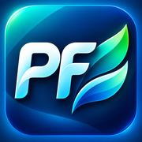

PharmaFlow
تثبيت أيقونة PharmaFlow بملء الشاشة على iPhone، بدون تغيير إعدادات البرنامج.
- افتح هذه الصفحة من تطبيق Safari.
- اضغط «تنزيل بروفايل للآيفون» ثم احفظ الملف إذا ظهر خيار الحفظ.
- افتح الإعدادات ← تم تنزيل ملف تعريف ← تثبيت.
- افتح PharmaFlow من أيقونة الشاشة الرئيسية.